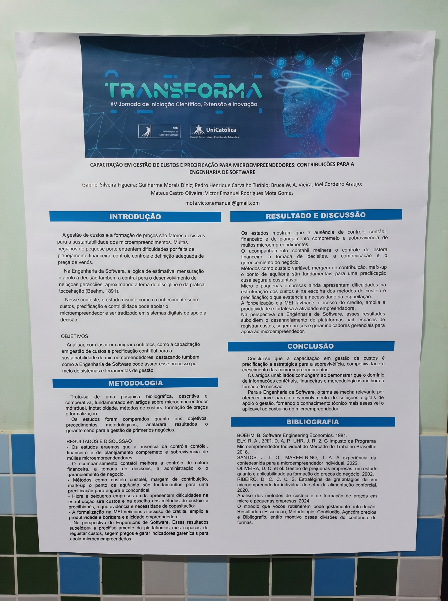
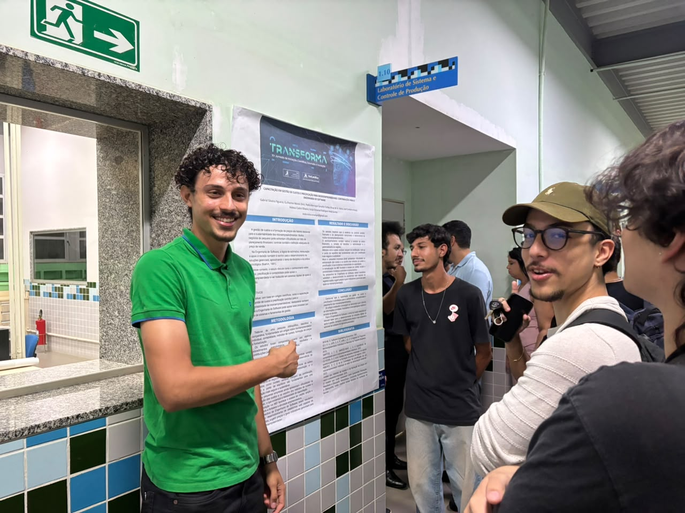
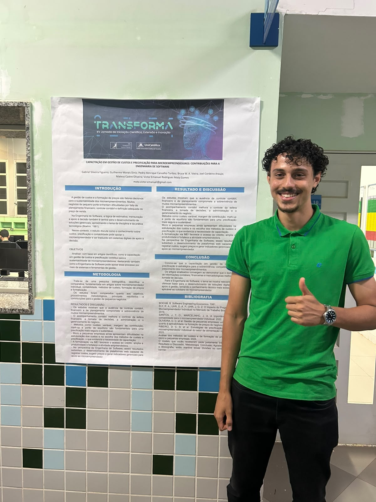
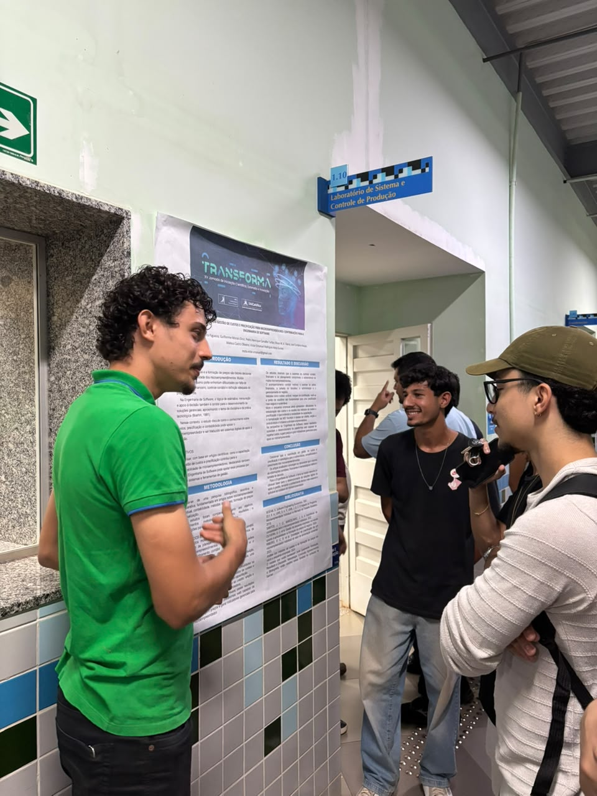
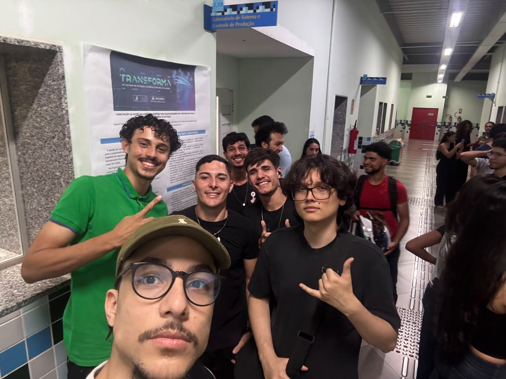

Por: Arthur da Rosa Lacerda e Jefferson Carneiro | Data: 07 de Outubro de 2026

Objetivo do projeto
A equipa procura analisar, com base em evidências científicas, de que forma a capacitação em gestão de custos e uma correta precificação contribuem para a sobrevivência a longo prazo dos microempreendedores. Em paralelo, o grande objetivo é demonstrar como a Engenharia de Software pode apoiar ativamente este processo, transformando o conhecimento contabilístico em sistemas digitais e ferramentas de gestão acessíveis.
O problema a ser resolvido
Uma grande parte dos pequenos negócios acaba por encerrar precocemente devido à falta de planeamento financeiro, ausência de controlo contabilístico e erros na definição do preço de venda. O estudo demonstra que a incapacidade de estruturar os custos e de escolher os métodos de precificação adequados compromete severamente a sobrevivência dos microempreendimentos no mercado atual.
Área de atuação e Público-alvo
Área de atuação: O projeto cruza o universo da Engenharia de Software com a Contabilidade e a Gestão Financeira, focando-se no desenvolvimento de soluções de apoio à decisão.
Público-alvo: A investigação é direcionada aos Microempreendedores Individuais (MEI) e aos proprietários de pequenas empresas que necessitam de ferramentas simples para gerir as suas finanças diárias.
Partes Interessadas (Stakeholders)
O sucesso desta integração tecnológica beneficia não só os microempreendedores (que ganham produtividade e segurança financeira), mas também profissionais de contabilidade, empresas de desenvolvimento de software e instituições bancárias, uma vez que a formalização financeira favorece e facilita o acesso ao crédito para as empresas.
Estado do mercado e Concorrentes
Atualmente, os microempreendedores dependem frequentemente de folhas de cálculo manuais ou de conselhos isolados para tentar gerir os seus preços. As principais soluções que atuam neste mercado e concorrem com a ideia de plataformas de apoio ao MEI são:
- Sebrae (Soluções e Planilhas): A principal referência no apoio ao microempreendedor. Disponibiliza diversas cartilhas e ferramentas financeiras, embora muitas vezes exijam que o utilizador já possua algum conhecimento prévio para as preencher corretamente.
- Conta Azul: Um sistema ERP de gestão empresarial e financeira muito conhecido no mercado. Apesar de eficiente na emissão de faturas e controlo de caixa, o seu modelo de subscrição pode ser inacessível para negócios na fase inicial, justificando a necessidade de plataformas web mais simples e focadas na precificação.
Diferencial e Tecnologias
Diferencial: O valor acrescentado desta investigação é pegar em métodos de custeio complexos (custeio variável, margem de contribuição, mark-up e ponto de equilíbrio) e simplificá-los. A ideia é que o conhecimento técnico se torne invisível para o utilizador final, sendo processado nos bastidores por plataformas digitais intuitivas que já sugerem o preço ideal.
Tecnologias envolvidas: O projeto subsidia a perspetiva de desenvolvimento de plataformas web robustas, programadas para registar despesas, efetuar cálculos automáticos de precificação e gerar indicadores de gestão em tempo real.
Análise crítica da nossa equipa
Enquanto analistas da exposição, percebemos que este projeto acerta em cheio numa dor crónica do mercado: a elevada taxa de mortalidade das pequenas empresas. O ponto forte é a ponte perfeita entre a teoria contabilística e a prática da Engenharia de Software. Como ponto de melhoria, a pesquisa neste momento é puramente bibliográfica. A nossa sugestão para os autores seria evoluir para a construção de um Produto Mínimo Viável (MVP) de uma aplicação web, para que a possam testar no terreno com empreendedores reais da região e validar a adesão a este tipo de interface.
Equipa e Autorização
Integrantes do projeto analisado: Gabriel Silveira Figueira; Guilherme Morais Diniz; Pedro Henrique Carvalho Turíbio; Bruce W. A. Vieira; Joel Cordeiro Araujo; Mateus Castro Oliveira e Victor Emanuel Rodrigues Mota Gomes.
Os registos visuais e as informações foram devidamente autorizados pela equipa responsável, e a declaração de consentimento está presente no *link* enviado no AVA.
Galeria de Fotos




